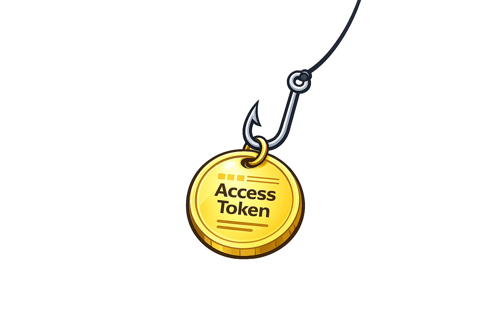

Anatomy of a Phishing Attack
Phishing remains one of the most effective, durable, and strategically important intrusion vectors facing modern enterprises. Across roughly two decades of industry breach reporting—most notably the Verizon Data Breach Investigations Report (DBIR)—one pattern has remained remarkably consistent: the compromise of credentials is the primary initial access vector leading to breaches. Whether those credentials are weak, reused, stolen, or indirectly abused, attackers overwhelmingly rely on legitimate authentication material to gain unauthorized access at scale.
This reality has led to an increasingly accurate framing of modern intrusions: attackers do not break in—they log in. Rather than exploiting software vulnerabilities or bypassing perimeter defenses, attackers present valid credentials, tokens, or sessions and are granted access by systems that are behaving exactly as designed. Phishing is not merely a social-engineering problem or a user-awareness failure; it is a technically mature delivery mechanism engineered to extract, intercept, or replay authentication artifacts—credentials, session cookies, and access tokens—within modern identity systems.
This article deconstructs phishing under the hood. Rather than treating phishing as opaque or purely psychological, it translates the attack into concrete, system-level interactions involving identity providers, authentication protocols, sessions, and trust boundaries. The objective is to give security leaders and practitioners an accurate mental model of what is actually happening during a phishing attack, so they can design architectures and controls that meaningfully reduce risk. Understanding how systems fail—when operating correctly under adversarial conditions—is the foundation for preventing them from failing again.
A Phishing Attack - 101
Before we look under the hood, lets anchor on a real-world scenario.
Imagine a finance employee at a mid-sized company receives an email that appears to be from DocuSign. The message is routine—a contract requiring their signature. The sender domain looks right at a glance. They click the link, land on a page that looks exactly like their company’s Microsoft 365 login, and authenticate normally. They may even complete an MFA prompt. Then they’re redirected to a real DocuSign document, and nothing seems wrong.
What actually happened is an adversary-in-the-middle (AiTM) phishing attack. The employee authenticated through an attacker-controlled reverse proxy sitting invisibly between their browser and Microsoft’s real identity provider. The proxy relayed their credentials and MFA response to Microsoft in real time, received a valid session cookie in return, and quietly retained a copy. The attacker now holds an authenticated session—and the employee has no idea.
This scenario is not hypothetical. It describes the operational pattern used in the majority of modern credential-based intrusions. Everything that follows explains why it works, how each step unfolds technically, and what it actually takes to stop it.
Why Phishing Works
Modern enterprise environments are identity-first. Applications, APIs, and cloud services rarely care who is behind a request—only whether the request is accompanied by valid authentication material. This distinction is foundational.
Phishing succeeds because it exploits the handoff between two very different kinds of trust:
Human trust, where users interpret context, intent, and legitimacy, and
Machine trust, where systems validate credentials, tokens, and sessions deterministically, without judgment.
Once valid authentication material is presented, systems behave exactly as designed: they grant access.
Several structural shifts have made phishing more impactful than ever. Centralized identity providers mean one successful phish can unlock dozens or hundreds of downstream services. Single Sign-On (SSO) amplifies blast radius by design. Token-based authentication shifts the attacker’s target from passwords alone to session cookies and bearer tokens that can be replayed. Remote and hybrid work has eliminated many of the implicit network trust signals that once provided a secondary layer of context.
Phishing is effective not because systems are poorly designed, but because they are correctly designed to trust valid identity artifacts—regardless of how those artifacts were obtained or where they are presented from.
The Phishing Kill Chain
While phishing campaigns vary in sophistication, successful attacks tend to follow a consistent technical lifecycle. Understanding this lifecycle—step by step—allows defenders to map controls and detections to specific failure points, rather than treating phishing as a single, monolithic risk.
1. Lure Engineering
The attack begins with reconnaissance and targeting. Attackers collect information from public sources, prior breaches, business workflows, and organizational patterns to craft lures that appear routine rather than alarming. The more mundane the message, the more effective it tends to be.
From a technical perspective, this phase is about establishing credibility. That includes sender identity that aligns with expected communications, domain names that visually or structurally resemble legitimate ones, and messaging that triggers normal business behavior rather than suspicion. Email authentication standards—SPF, DKIM, and DMARC—were designed to make spoofing harder, and they do raise the bar meaningfully. But they are not a complete defense: attackers routinely register lookalike domains that pass all three checks, or compromise legitimate senders entirely. Lure disruption is valuable, but it cannot be the last line of defense.
Importantly, the attacker’s objective at this stage is not malware execution or exploitation. The objective is to induce a legitimate authentication attempt—one that can be relayed, intercepted, or observed—in an attacker-controlled context.
Controls that rely exclusively on users identifying suspicious emails operate entirely in this phase—and fail the moment a user engages.
2. Authentication Redirection
Once the user interacts with the lure, they are redirected to infrastructure designed to sit at or near an authentication boundary. What matters here is not visual fidelity—it is protocol compatibility.
Modern phishing infrastructure is built around adversary-in-the-middle (AiTM) frameworks. Tools such as Evilginx and Modlishka function as transparent reverse proxies: they receive the victim’s browser requests, forward them to the real identity provider, and return the legitimate responses—including login pages, MFA prompts, and redirects—back to the victim in real time. From the user’s perspective, the experience is indistinguishable from a normal login. From the system’s perspective, a legitimate authentication flow is in progress.
The attacker’s infrastructure is not pretending to be Microsoft or Okta. It is actively relaying communications to and from them in real time, positioned silently in the middle of a genuine authentication exchange and participating correctly in the underlying authentication protocol.
This is where many traditional security assumptions break down. The authentication flow itself may be entirely legitimate—the context in which it occurs is not.
3. Token Capture
Historically, phishing focused on harvesting usernames and passwords. In modern enterprise environments, that is only the first—and often the least important—artifact.
To understand why, it helps to understand what happens after a user successfully authenticates. Identity systems do not keep a connection open; instead, they issue session artifacts—tokens and cookies—that the browser presents with each subsequent request to prove the session is still valid. The most important of these is the session cookie, which typically contains or references a signed, time-limited assertion of authenticated identity.
In most modern deployments, this process is implemented using OAuth 2.0 and OpenID Connect. These protocols are designed to enable scalable, delegated authentication across many applications and services. Once authentication is complete, access is represented not by an ongoing dialogue, but by possession of issued artifacts that downstream systems trust by design.
A related concept is the bearer token—used extensively in OAuth-based access and API authorization. A bearer token is a self-contained credential: any system that receives it will treat the request as authenticated, regardless of who is presenting it or from where. The name is intentional. Whoever bears the token is treated as the authenticated principal.
In an adversary-in-the-middle (AiTM) attack, the reverse proxy captures these artifacts directly from the authentication response before forwarding the remainder to the victim. By the time the user lands on the legitimate destination, the attacker already holds a valid session cookie or access token. Multi-factor authentication may have been fully satisfied during this exchange—because the victim completed it themselves, through the relay.
From the system’s perspective, nothing abnormal has occurred: valid credentials were presented, MFA requirements were met, and a session was successfully established. The attacker’s copy of that session is just as valid as the victim’s.
Any authentication artifact that can be replayed outside its original context is inherently phishable. MFA proves that a user authenticated—it does not prevent the resulting session from being intercepted and reused.
4. Session Replay
Once a session cookie or access token is obtained, the attacker no longer needs the user’s password. The token is the identity.
This is a critical shift worth internalizing. Traditional multi-factor authentication was designed to ensure that only the legitimate user could complete an authentication event. It was not designed to prevent an attacker from resuming a session that the legitimate user already completed. The attacker does not bypass MFA—they allow the victim to complete it through the relay, then inherit the resulting session.
By replaying the captured session material from their own environment, attackers can access cloud applications and internal tools, interact with APIs and management consoles, and do so while appearing entirely indistinguishable from the legitimate user. Because the session is valid, many traditional security controls cannot reliably differentiate attacker activity from normal behavior.
MFA reduces risk substantially, but it does not eliminate phishing when session tokens can be replayed. The goal of phishing-resistant architecture is to make token replay impossible by design—not merely more difficult.
5. Persistence and Expansion
Initial access is rarely the attacker’s end state. With authenticated access, attackers begin mapping permissions, discovering connected services, and identifying opportunities to persist beyond the lifetime of the stolen session.
Common post-access activities include registering new authentication factors or devices, minting additional API keys or OAuth tokens, and leveraging overly broad roles or inherited permissions to move laterally. Because these actions occur entirely within an authenticated context, they often blend into normal administrative or user activity and evade detection until significant damage has already been done.
Identity compromise is rarely isolated. Without strong privilege boundaries and anomaly detection focused on identity telemetry, initial access can expand rapidly and quietly.
6. Data Access And Exfiltration
The final stage mirrors any post-compromise operation. Attackers access sensitive data, manipulate resources, or exfiltrate information using the same mechanisms and access paths available to legitimate users.
At this point, perimeter defenses are largely irrelevant. The identity system itself has vouched for the attacker, and downstream systems comply accordingly. Detection at this stage is possible, but it represents a late—and often expensive—recovery rather than effective prevention.
By the time data access is detected, the root failure often occurred much earlier in the authentication chain. The strategic priority is to break the kill chain at steps 2 or 3, before a valid session is ever issued to an attacker.
Why Credentials Still Dominate
The persistence of credential-based compromise in breach reporting is not accidental. Identity systems are universally trusted, externally reachable, and operated by humans under constant cognitive load. Phishing exploits all three characteristics simultaneously.
As long as authentication artifacts can be presented from anywhere, by anyone, compromised credentials will remain the most efficient path to access. This is why decades of breach data—most visibly reflected in the DBIR—continue to show credential compromise as the dominant initial access vector, and why phishing remains the most effective way to obtain it.
High-Impact Defensive Controls
Mitigating phishing requires moving beyond detection and awareness toward architectural resilience. The controls below are ordered roughly by their impact on breaking the phishing kill chain.
Phishing-Resistant Authentication
Authentication mechanisms that rely on reusable secrets or bearer tokens are inherently phishable. The solution is cryptographic binding.
FIDO2 and passkeys are the most mature implementations of this principle. When a user authenticates with a FIDO2 credential, their device generates a cryptographic signature using a private key that never leaves the device. Critically, the signature is scoped to a specific relying party—the legitimate origin of the authentication request. An adversary-in-the-middle (AiTM) reverse proxy cannot satisfy this requirement: it cannot present a valid FIDO2 assertion on behalf of the real identity provider, because the cryptographic binding breaks the moment the origin changes.
This is why phishing-resistant authentication defeats AiTM attacks by design, not by detection. There is no stolen artifact to replay because no replayable artifact is ever issued.
Practical implication: FIDO2 and passkey adoption is the single highest-leverage architectural change an organization can make to reduce phishing risk.
Token and Session Hardening
Even where phishing-resistant authentication is not yet fully deployed, reducing the value and longevity of session artifacts can significantly limit attacker dwell time and blast radius.
Practical measures include minimizing token lifetimes, binding sessions to device signals or network context, and deploying Continuous Access Evaluation (CAE)—a capability supported by major identity providers that allows downstream services to revoke sessions in near real time when risk signals change, rather than waiting for a token to expire. Where a stolen session might previously have remained valid for hours, CAE can invalidate it within minutes of anomalous behavior being detected.
Least Privilege and Access Segmentation
Strong role boundaries, scoped permissions, and just-in-time access significantly constrain what an attacker can do—even after successful authentication. The objective is to ensure that a compromised session for one user cannot become a foothold for the entire environment.
Identity-Centric Detection
Effective detection focuses on identity behavior rather than network perimeter signals. Key indicators include impossible travel and session anomalies, token reuse across geographies or devices, new MFA device registrations following authentication, and sudden privilege escalation. Identity telemetry is now one of the most reliable early indicators of compromise—and in many cases, it is the only place the attack leaves a trace.
Email Authentication as a Lure-Disruption Layer
Deploying SPF, DKIM, and DMARC in enforcement mode raises the cost of impersonating your domain in phishing lures. It does not prevent attackers from registering lookalike domains or compromising third-party senders, but it removes a category of easy spoofing and reduces the surface area of lure infrastructure. It is a baseline control, not a complete defense.
Security and User Experience Are Not Opposed
A critical and often overlooked insight: many phishing-resistant technologies also improve user experience. Passkeys eliminate passwords entirely. Reducing reliance on push-based MFA reduces fatigue. Streamlining authentication flows can make systems both safer and easier to use.
Controls that align with natural workflows are adopted. Controls that depend on constant user vigilance eventually fail.
Closing
Phishing is not a mystery, and it is not merely deception. It is a precise exploitation of how modern identity systems establish trust—and it has adapted to every defensive evolution the industry has deployed. Passwords gave way to multi-factor authentication; adversary-in-the-middle phishing adapted to harvest the sessions that MFA produces. The only durable architectural response is to eliminate replayable authentication artifacts entirely.
The trajectory of the industry points toward passwordless authentication—toward FIDO2, passkeys, and cryptographically bound authentication that makes session theft structurally impossible. Organizations that move in this direction are not merely reducing phishing risk; they are removing phishing as a viable attack path altogether.
As long as credentials remain the primary gate to enterprise systems, phishing will remain a top threat. The strategic objective is not to eliminate human error—it is to design systems where a single mistake cannot become a breach.
That is the anatomy of a phishing attack—and the blueprint for defending against it.